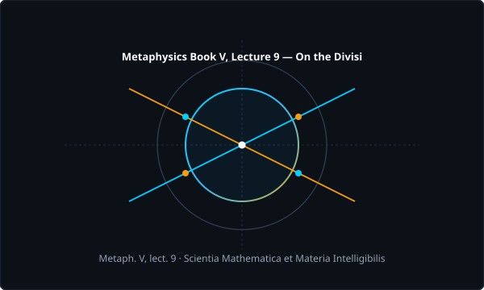

Metaphysics Book VII, Lecture 11 — How Mathematical Species Are Defined Without Sensible Matter Yet Not Without Common Intelligible Matter¶
In VII Metaphysicorum, Lectio 11 — Quomodo species mathematicae definiantur absque materia sensibili sed non absque materia intelligibili communi

[lib. 7 l. 11 n. 1 · Marietti #1501] In this part he resolves a certain doubt that could arise from the solution of the preceding question. For in solving the preceding question he had distinguished between the parts of the species and the parts of the individual, which is composed of the species and of matter; and therefore he here inquires which are parts of the species and which are not. This part, accordingly, is divided into three parts. In the first, he resolves this doubt. In the second, he shows what remains to be said, where he says, Whether, however, apart from the matter. Third, he recapitulates the things that have been said, where he says, What indeed, therefore, the what-it-was-to-be is. Concerning the first he does three things. First, he raises the doubt. Second, he solves it, where he says, Whatever things indeed, therefore, and so forth. Third, in manifesting the solution he summarizes it, where he says, Now it is plain, and so forth. First, therefore, he says that since it has been stated that the parts of the species are placed in definitions, whereas the parts of the composite of species and matter are not, it is rightly doubted which are parts of the species and which are not parts of the species, but of the composite taken together, that is, of the individual, in which the nature of the species is taken together with the individuating matter itself.
[lib. 7 l. 11 n. 2 · Marietti #1502] For if this is not manifest, we shall not be able to define anything rightly, because a definition is never of a singular thing, but only of a universal, as was said above; and among universals it belongs properly to the species, which is constituted of genus and difference, out of which every definition consists, for a genus is not defined unless it is also a species. Hence it is clear that unless it is known which part stands as matter, and which does not stand as matter but as pertaining to the species itself, it will not be manifest of what sort the definition to be assigned to the thing ought to be, since a definition is assigned only to the species, and in the definition of the species it is necessary to place the parts of the species and not the parts that are posterior to the species.
[lib. 7 l. 11 n. 3 · Marietti #1503] Next, when he says, Whatever things indeed, he solves the proposed doubt. And concerning this he does three things. First, he sets forth a solution according to the opinion of the Platonists. Second, he refutes it, where he says, It comes about, therefore, that one. Third, he solves it according to his own judgment, where he says, Wherefore to reduce all things. Concerning the first he does two things. First, he solves the proposed doubt as regards sensible things; second, as regards mathematical entities, where he says, Since, however. First, therefore, he says that in certain things it is manifest that matter is not a part of the species, namely in all those things that manifestly appear to come to be in matters diverse in species, just as a circle is found to come to be in bronze and in stone and in wood. Hence it is manifest that neither bronze nor stone nor wood belongs in any way to the substance of the circle, as though it existed as a part of this species, which is the circle. And this is manifest because the circle is separated from any one of these, whereas nothing can be separated from that which is a part of its species.
[lib. 7 l. 11 n. 4 · Marietti #1504] Yet there are certain things whose species are not found to come to be in matters diverse in species, but always in the same: just as the species of man, as regards what visibly appears, is found only in flesh and bones. Nothing, however, prevents even these things, which are not seen separated from their proper matter, from standing in the same relation to their matters as those things that can exist in diverse matters and be separated from each of them.
[lib. 7 l. 11 n. 5 · Marietti #1505] For if we were to suppose that no circles were sensibly seen except of bronze, nevertheless bronze would [not] even so be a part of the species of the circle. And although the circle would not then be separated in act from bronze, yet it would be separated in thought, because the species of the circle could be understood without bronze, inasmuch as bronze would not be a part of the species of the circle—even though it is difficult to remove and separate from one another in thought things that are not separated in act; for this belongs only to those who are able through the intellect to rise above sensible things.
[lib. 7 l. 11 n. 6 · Marietti #1506] And similarly, if the species of man always appears in flesh and bones and such parts, one must inquire whether these parts belong to the human species and to the formula, that is, to the definition of man, or whether they are not parts of the species, but only the matter of the species, just as bronze is of the circle. Yet because such a species does not come to be in material parts other than these, we cannot easily separate man by the intellect from flesh and bones; for the same reasoning seems to hold here as in the case of the circle, if all circles were of bronze.
[lib. 7 l. 11 n. 7 · Marietti #1507] Next, when he says, Since, however, he proceeds further in pursuing the opinion touched upon above as regards mathematical entities, saying that because this seems to happen in some cases—namely that the matter is not a part of the species even though the species is never found except in that matter—yet it is not manifest when and in which cases this happens or does not happen, therefore certain thinkers raise a doubt about this not only in natural things, but also in mathematical entities, such as in the circle and the triangle.
[lib. 7 l. 11 n. 8 · Marietti #1508] For it seems to them that just as sensible matter is not a part of the species in natural things, so too intelligible matter is not a part of the species in mathematical entities. Now the intelligible matter of mathematical figures is the continuum, such as line or surface. And therefore this view holds that the line is not a part of the species of the circle or of the triangle, as though it were not fitting that the triangle and the circle be defined through lines and the continuum, since they are not parts of the species, and that all these stand in the same relation to the circle and the triangle as flesh and bones stand to man, and bronze and stones to the circle.
[lib. 7 l. 11 n. 9 · Marietti #1509] Now when the continuum, which is the line, is removed from the triangle and the circle, nothing remains except unity and number, because a triangle has three lines and a circle one. And therefore, since they deny that lines are parts of the species, they refer all species to numbers, saying that numbers are the species of all mathematical entities; for they say that the formula of two is the formula of the straight line, because a straight line is terminated by two points.
[lib. 7 l. 11 n. 10 · Marietti #1510] Yet concerning this there is a certain difference among the Platonists who posit Ideas. For some, who do not posit mathematical entities as intermediates between the species and sensible things, and who say that the species are numbers, declare that the line itself is the dyad (dualitas), because they do not posit an intermediate line differing from the species of the line.
[lib. 7 l. 11 n. 11 · Marietti #1511] Others, however, say that the dyad is the species of the line, and not the line itself; for the line is a certain mathematical intermediate between the species and sensible things, whereas the dyad is the species itself. And according to them, in certain cases the species and that of which it is the species do not differ, as in numbers, because they said that the species themselves are numbers; hence they said that the dyad and the species of the dyad are the same. In the case of the line, however, this does not happen according to them, because the line already expresses something participating in a species, since many lines are found to exist in one species—which would not be the case if the line itself were the species itself.
[lib. 7 l. 11 n. 12 · Marietti #1512] Next, when he says, It comes about, therefore, he refutes the aforesaid solution, and sets forth three arguments, the first of which is this. If numbers alone are species, all those things that participate in one number participate in one species. Now there are many things diverse in species that participate in one number; for one and the same number is in the triangle by reason of its three lines, and in the syllogism by reason of its three terms, and in a body by reason of its three dimensions. It comes about, therefore, that there is a single species of many things that are diverse in species. And this happens not only to the Platonists, but also to the Pythagoreans, who likewise posited that numbers are the nature of all things.
[lib. 7 l. 11 n. 13 · Marietti #1513] He sets forth the second argument where he says, And it happens, which is as follows. If flesh and bones are not parts of the human species, nor lines parts of the species of the triangle, by parity of reasoning no matter is a part of a species. Yet according to the Platonists, in number the dyad is attributed to matter, whereas unity is attributed to the species; therefore unity alone is a species. The dyad, however, and consequently all other numbers, as implying matter, will not be species; and thus there will be only one species of all things.
[lib. 7 l. 11 n. 14 · Marietti #1514] He sets forth the third where he says, Although thus, which is as follows. Those things are one whose species is one. If, therefore, the species of all things is one, it will follow that all things are one in species, and not merely those that seem to be diverse. Yet it can be said that this third point is not another argument distinct from the second, but an absurdity that follows from the conclusion of the second argument.
[lib. 7 l. 11 n. 15 · Marietti #1515] Having therefore set forth the reasoning on which the preceding solution rested, and having set forth the arguments against the preceding solution, he concludes that it has been stated that matters concerning definitions involve a doubt, and for what cause. And thus it is clear that through everything said above he wished to show the difficulty of the preceding doubt.
[lib. 7 l. 11 n. 16 · Marietti #1516] Next, when he says, Wherefore all things, he solves the preceding question according to his own judgment: and first as regards natural things; second as regards mathematical entities, where he says, Concerning mathematical entities. First, therefore, he says that since the aforesaid absurdities follow for those who remove from the species of a thing everything material, whether sensible or not, it is clear from what has been said that it is superfluous to reduce all the species of things to numbers or to unity, and to take away sensible and intelligible matter altogether, as the Platonists did.
[lib. 7 l. 11 n. 17 · Marietti #1517] For certain species of things are not forms without matter, but are perhaps this in this, that is, forms in matter, in such a way that what results from the form existing in matter is the species; or if they do not exist strictly as form in matter, they stand after the manner of things that have form in matter. For natural things properly have form in matter, and mathematical entities are in a certain way assimilated to them, inasmuch as the proportion of the figure of a circle or of a triangle to lines is like the proportion of the form of man to flesh and bones. And therefore, just as the species of man is not some form without flesh and bones, so the form of the circle or of the triangle is not some form without lines. And therefore the comparison (parabola) that Socrates the Younger used to state concerning the animal is not sound.
[lib. 7 l. 11 n. 18 · Marietti #1518] Now he seems to call Plato himself “Socrates the Younger,” because in all his books Plato introduces Socrates as speaking, on account of his having been his teacher. And he calls Plato’s opinion concerning the materiality of natural species a “comparison” (parabola), because it resembles fables composed to insinuate some doctrine metaphorically; on account of which he said above in the third book that this opinion resembles the opinions of those who fashion gods and hold that their forms are like human forms. Now the aforesaid opinion is not sound because it leads away from the truth, inasmuch as it makes one suppose that it is possible for a man to exist without material parts, namely without flesh and bones, in the same way in which it is possible for a circle to exist without bronze, which manifestly does not pertain to the species of the circle.
[lib. 7 l. 11 n. 19 · Marietti #1519] Yet the two cases are not alike. For man does not stand to flesh and bones in the same way as the circle stands to bronze, because the circle is not something sensible according to its intelligible formula, since it can be understood without sensible matter; hence bronze, which is sensible matter, is not a part of the species of the circle. An animal, however, clearly is something sensible, for it cannot be defined without motion, since an animal is distinguished from a non-animal by sense and motion, as is clear in the first book of De Anima. And therefore an animal cannot be defined without bodily parts disposed in some due manner for motion. For a hand is not a part of a man in just any condition whatever, but when it is so disposed that it can perform the work of a hand, which it cannot do without the soul, which is the principle of motion. Wherefore the hand of anyone must be a part of man according as it is animate; according as it is inanimate, however, it is not a part, like a dead or painted hand. Hence it is necessary that such parts as are necessary for performing the operation proper to the species be parts of the species, both those on the part of the form and those on the part of the matter.
[lib. 7 l. 11 n. 20 · Marietti #1520] Next, when he says, Concerning mathematical entities, he solves the question as regards mathematical entities. For after the solution given concerning natural things, there still seems to remain a doubt concerning mathematical entities. For he had said that since an animal is sensible, it cannot be defined without sensible parts, whereas a circle can be defined without bronze, which is sensible matter. And therefore concerning mathematical entities it is asked why the formulas, that is, the definitions of the parts, are not parts of the formulas of the wholes—for instance, why hemicycles, that is, semicircles, are not placed in the definition of the circle; for it cannot be said that these, namely semicircles, are sensible things in the way that bronze is sensible matter.
[lib. 7 l. 11 n. 21 · Marietti #1521] Yet he solves this by saying that it makes no difference to the point at issue whether the parts of matter are sensible or non-sensible, because even non-sensible things have a certain intelligible matter. And such matter—namely that which is not a part of the species—belongs to everything that is not in itself identical with its what-it-was-to-be and species, but is a “this something”, that is, some demonstrated particular: as if to say that in everything that is not its own species itself, but is some determinate individual within a species, there must be certain parts of matter that are not parts of the species. For Socrates, because he is not his own humanity itself, but is one having humanity, therefore has in himself material parts that are not parts of the species, but parts of this individual matter which is the principle of individuation, such as this flesh and these bones.
[lib. 7 l. 11 n. 22 · Marietti #1522] And similarly, in this circle there are these lines, which are not parts of the species. Hence it is clear that things of this sort are not parts of the circle that is universal, but are parts of singular circles, as was said earlier. And on account of this, semicircles are not placed in the definition of the universal circle, because they are parts of singular circles and not of the universal circle. And this holds true both in sensible matter and in intelligible matter, for matter is found in both ways, as is clear from what has been said. If, however, there were some individual that was its very own species—as if Socrates were his very own humanity—there would not be in Socrates any parts that were not parts of humanity.
[lib. 7 l. 11 n. 23 · Marietti #1523] Next, when he says, Now it is plain, he summarizes the aforesaid solution, exemplifying it in the animal; saying that it is plain that the soul is the primary substance, that is, the form of the animal, whereas the body is the matter, and man or animal is that which consists of both, namely in universal, whereas Socrates and Coriscus are that which consists of both in particular, since the soul is spoken of in two ways, namely in universal and in particular, such as soul and this soul. Now the reason why what is signified after the manner of a whole must be spoken of universally and singularly because the soul is spoken of in two ways is that this holds according to both opinions held by men concerning the soul. For, as was said above, some say that man and animal are the soul, while others say that man and animal are not the soul, but the whole, namely the composite of soul and body.
[lib. 7 l. 11 n. 24 · Marietti #1524] It is clear, therefore, that according to the opinion which says that man is the soul, the soul is spoken of universally and singularly, such as soul and this soul, and man likewise is spoken of universally and particularly or singularly, namely man and this man. Similarly, according to the opinion which says that man is a composite of soul and body, it follows that if the simple principles are spoken of universally and singularly, the composite too is spoken of universally and singularly: just as if this soul and this body exist—which, when spoken of simply, stand as parts of the composite—then not only the parts, but also the composite, is spoken of both universally and particularly or singularly.
[lib. 7 l. 11 n. 25 · Marietti #1525] Next, when he says, Whether, however, he shows what remains to be determined hereafter concerning substances; and he states that two things remain to be determined. The first of these is that, since it has been determined that the substance and the what-it-is of sensible and material things are the very parts of the species, it remains to determine whether apart from the matter of such substances, namely material and sensible ones, there exists any substance, in such a way that one must seek some substance of these sensible things other than that which has been determined—just as certain thinkers say that numbers existing apart from matter, or something of the sort, that is, separate species or Ideas, are the substances of these sensible things. And this must be investigated later.
[lib. 7 l. 11 n. 26 · Marietti #1526] For this investigation is proper to this science. For in this science we endeavor to determine the truth concerning sensible substances for the sake of this, that is, on account of immaterial substances, because theoretical inquiry concerning sensible and material substances belongs in a way to physics, which is not first philosophy, but second philosophy, as was established in the fourth book. For first philosophy treats of primary substances, which are immaterial substances, and it investigates them not only insofar as they are substances, but insofar as they are such substances, namely insofar as they are immaterial. Sensible substances, on the other hand, it investigates not insofar as they are such substances, but insofar as they are substances, or even beings, or insofar as through them we are led by the hand to the knowledge of immaterial substances. The natural philosopher, conversely, treats of material substances not insofar as they are substances, but insofar as they are material and have within themselves a principle of motion.
[lib. 7 l. 11 n. 27 · Marietti #1527] And because someone might suppose that natural science does not investigate whole material and sensible substances, but only their matters, he therefore removes this misconception, saying that the natural philosopher must consider not only matter, but also that part which is according to the formula, namely the form—and indeed form even more than matter, because form is nature more than matter is, as was proved in the second book of the Physics.
[lib. 7 l. 11 n. 28 · Marietti #1528] The second point that remains to be determined is how the parts that are in the formula, that is, in the definition, are related—namely whether they are substances existing in act, and also why a definition, though composed of many parts, is a single formula. For it is plain that a definition must be a single formula only, because the thing is one, and the definition signifies what the thing is. By what principle, however, a thing having parts is made one must be investigated later.
[lib. 7 l. 11 n. 29 · Marietti #1529] Next, when he says, What indeed, he recapitulates the things that have been determined, saying that it has been stated what the what-it-was-to-be is, and how that which is the what-it-was-to-be is predicated universally of all and predicated according to itself. And again it has been stated why for certain things the formula signifying the what-it-was-to-be contains within itself the parts of the thing defined, just as the definition of a syllable contains the letters, and for certain things it does not, just as the definition of a circle does not contain the semicircles. It has also been stated that in the formula of the substance, that is, of the form, parts that are parts of the substance as matter are not placed, because such parts are not parts of that substance, that is, of the form, but parts of the whole composite.
[lib. 7 l. 11 n. 30 · Marietti #1530] Of this composite, indeed, in one way there is a definition, and in another way there is not. For if it is taken with matter, namely individual matter, there is no definition of it, because singulars are not defined, as was established above; and the reason for this is that such individual matter is something infinite and indeterminate, since matter is rendered finite only through form. Yet the composite taken according to primary substance, that is, according to form, has a definition; for the composite is defined as taken in species, not according to the individual.
[lib. 7 l. 11 n. 31 · Marietti #1531] Now just as the individual is individuated through matter, so each thing is placed in its species through form; for a man is not a man because he has flesh and bones, but from the fact that he has a rational soul in flesh and bones. Hence it is necessary that the definition of the species be taken from the form, and that only those parts of matter be placed in the definition of the species in which the form primarily and principally resides: just as the formula of man is that which belongs to the soul, since it is from having such a soul that a man is a man. And on account of this, if man is defined, he must be defined through the soul, and nevertheless in his definition must be placed the parts of the body in which the soul primarily resides, such as the heart or the brain, as he said above.
[lib. 7 l. 11 n. 32 · Marietti #1532] For the substance itself of which matter is not a part is the species, that is, the form inhering in matter, from which form and matter the whole substance is spoken of, that is, is determined and defined. Thus concavity is a certain form, for out of it and the nose are spoken of the snub nose and snubness; and similarly out of soul and body are spoken of man and humanity. For if the nose, which stands as matter, were a part of curvature, then when “curved nose” is said, “nose” would be said twice: once by its own name, and once insofar as it would be included in the definition of the curved (if, that is, it were placed in its definition as a part of the essence of curvature, and not by way of addition, as was said above). Although, however, matter does not belong to the essence of the form, it is nevertheless present in the whole composite substance, just as curvature is in the snub nose, and individual matter too is in Callias.
[lib. 7 l. 11 n. 33 · Marietti #1533] It was also said above that the what-it-was-to-be of each thing is the same as that whose what-it-was-to-be it is. And this is unqualifiedly true in certain things, such as in primary substances, that is, in immaterial substances: just as curvature itself is the same as the what-it-was-to-be of curvature, provided curvature belongs among primary substances. And he says this because curvature too seems to be a form in matter, though not in sensible matter, but in intelligible matter, which is the continuum itself. Or, according to another reading, which is primary: for there is a certain primary curvature, such as the curvature that exists among the separate species according to the Platonists, in which species it is universally true that each is the same as its what-it-is; whereas the other curvature, which exists in sensible things or in mathematical entities, is not primary, and hence is not the same as its what-it-was-to-be.
[lib. 7 l. 11 n. 34 · Marietti #1534] And in explaining this he says that by “primary substance” here he means not particular substance, as in the Categories, but that which is not spoken of through one thing being in another as in a subject and matter, that is, those things which are forms not in matter, such as separate substances. Whatever things, on the other hand, stand as matter, or are conceived together with matter, such as composites that include matter in their intelligible formula—in these the what-it-was-to-be and that whose what-it-was-to-be it is are not the same. Nor are they one in things spoken of according to accident, as Socrates and musical are the same per accidens.
[lib. 7 l. 11 n. 35 · Marietti #1535] Now it must be observed that from the thesis he had laid down—namely that the what-it-is is the same as each thing whose what-it-is it is—he here makes two exceptions, namely things spoken of per accidens and material substances, whereas earlier he had excepted only things spoken of per accidens. Yet not only these must be excluded, but material substances as well. For, as was said above, the what-it-was-to-be is that which the definition signifies. Now a definition is assigned not to individuals, but to species; and therefore individual matter, which is the principle of individuation, lies outside that which is the what-it-was-to-be. Yet it is impossible in the nature of things for a species to exist except in this individual. Hence it is necessary that every thing of nature, if it has matter that is a part of the species pertaining to the what-it-is, also have individual matter that does not pertain to the what-it-is. Thus no thing of nature, if it has matter, is its very what-it-is, but is something having it, just as Socrates is not humanity, but one having humanity. If, however, it were possible for there to exist a man composed of body and soul who was not this man composed of this body and of this soul, he would nonetheless be his own what-it-was-to-be, even though he had matter.
[lib. 7 l. 11 n. 36 · Marietti #1536] Although, however, man apart from singulars does not exist in the nature of things, he nevertheless exists in conceptual thought (in ratione), which pertains to logical consideration. And therefore earlier, where he considered the what-it-was-to-be logically, he did not exclude material substances from having their what-it-is be the same as that whose what-it-is it is; for common man is the same as his what-it-is, speaking logically. Now, however, after he has descended to the natural principles, which are matter and form, and has shown how they stand in diverse relations to the universal and to the particular that subsists in nature, he here excepts material substances existing in the nature of things from what he had said above—that the what-it-is is the same as each thing. It remains, then, that those substances which are subsistent forms alone have nothing whereby they are individuated that lies outside the formula of the thing or of the species signifying the what-it-is; and therefore in them it is unqualifiedly true that each of them is its own what-it-was-to-be.